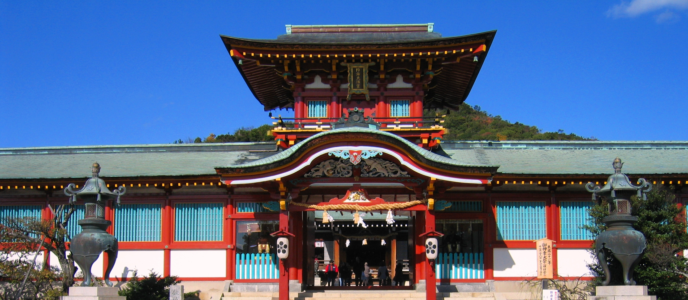

防府天満宮

防府天満宮とは？
防府天満宮は日本三大天神の一つであり、有名な祭りとしては 2月の牛替神事（うしかえしんじ）と 11月の御神幸祭（ごじんこうさい）が挙げられる。 御神幸祭は別名裸坊祭（はだかぼうまつり）ともいい、約1トンある御網代（おあじろ）を引っ張って、行きは表参道の大階段を下り、 帰りは表参道の階段を上っていくという危険なことをするために、毎年怪我人が絶えない。また牛替神事は、天神様の乗られる牛車を引く 牛を取り替えるということでの儀式である。その他、8月3日から5日までは、道真の生誕を祝う御誕辰祭が行われる。 夜には1000本あまりの蝋燭に火を灯した万灯祭献灯で表参道が飾られるほか、 最終日には防府天満宮夏祭り大花火大会も行われる。その他にもいろいろな行事やイベントがある。
アクセス
・山陽本線防府駅から徒歩20分
・山陽自動車道防府西IC、防府東ICから車で10分